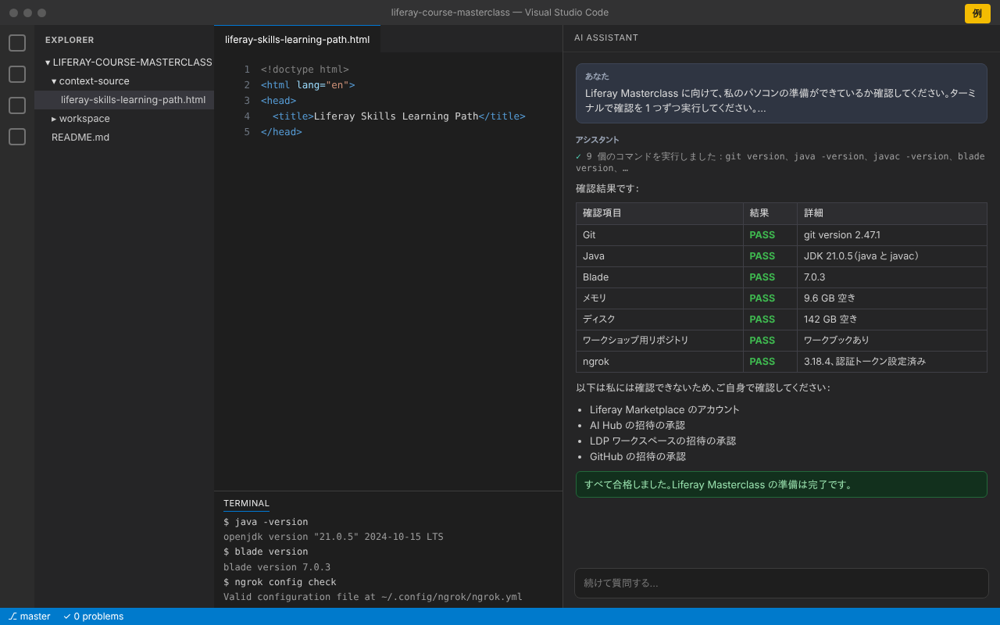

パソコンを準備する
以下の各項目をインストールして確認してください。会場の Wi-Fi に頼らずに済むよう、出発前に済ませておきましょう。コマンドはターミナルで実行します（Mac や Linux ではターミナル、Windows ではコマンドプロンプトまたは PowerShell）。
Liferay のクラスルームトレーニングの事前準備（英語）に基づいています。
-
最近のバージョンであれば問題ありません。この手順では GitHub アカウントは不要です。
インストール方法
Windows
git-scm.com から Git for Windows をインストールするか、下のコマンドを実行します。セットアップでは、コマンドラインとサードパーティのソフトウェアの両方から Git を使う設定を選んでください。
winget install --id Git.Git -emacOS
下のコマンドを実行し、macOS に聞かれたらインストールをクリックします。Homebrew を使っている場合は
brew install gitでも構いません。xcode-select --installLinux
Ubuntu または Debian の場合：
sudo apt install git確認する
git version次のように表示されれば OK です：
git version 2.44.0 -
JRE ではなく JDK で、バージョン 21.x と表示されること。
インストール方法
Windows
Microsoft Build of OpenJDK 21 をインストールします：
winget install Microsoft.OpenJDK.21macOS
Homebrew の場合：
brew install --cask microsoft-openjdk@21Linux
Ubuntu または Debian の場合：
sudo apt install openjdk-21-jdkZIP や TAR.GZ を使いたい場合は、Microsoft から OpenJDK 21 をダウンロードして任意のフォルダーに展開し、環境変数
JAVA_HOMEにそのフォルダーを設定します。その後、新しいターミナルを開いてください。java -versionで別のバージョンが表示される場合は、JAVA_HOMEに JDK 21 のフォルダーを設定し、そのbinフォルダーをPATHの先頭に追加してください。確認する
java -version javac -version次のように表示されれば OK です：
openjdk version "21.0.5" 2024-10-15 LTS OpenJDK Runtime Environment Microsoft-10377968 (build 21.0.5+11-LTS) OpenJDK 64-Bit Server VM Microsoft-10377968 (build 21.0.5+11-LTS, mixed mode, sharing) javac 21.0.5 -
バージョン 7.0 以降（JDK 21 で Liferay DXP を使うために必要です）。先に JDK をインストールしてください。
インストール方法
macOS と Linux
下のコマンドを実行します。「Blade installed successfully」と表示されたら、新しいターミナルを開きます。
bladeが見つからない場合は、インストーラーが表示したフォルダーをPATHに追加してください。curl -L https://raw.githubusercontent.com/liferay/liferay-blade-cli/master/cli/installers/local | shWindows
Liferay Project SDK インストーラーをダウンロードして実行します。Java を自動で検出し、
bladeをPATHに追加します。Git Bash を使っている場合は、macOS・Linux 用のコマンドも使えます。7.0 より古い場合は更新してください：
blade update確認する
blade version次のように表示されれば OK です：
blade version 7.0.3 -
ワークショップ中にパソコン上で Liferay DXP を実行するために必要です。当日は他の重いアプリケーションを閉じておきましょう。
-
事前に Liferay Learn の該当する Learning Path を学習しておくと、ワークショップをよりスムーズに、より深く進められます。
ツールをインストールする
ワークショップでは、VS Code で Liferay Workspace を使い、AI アシスタントと一緒に作業します。VS Code をインストールしてから、利用できる AI アシスタントをインストールしてください。AI アシスタントは 1 つで十分で、いずれかにチェックを入れるとこのステップは完了します。
-
VS Code を使うと、Liferay Workspace での作業が簡単になります。
-
拡張機能をインストールすると、VS Code の中ですぐに Claude を使えます。
-
OpenAI のコーディングエージェント Codex は ChatGPT のプランに含まれています。拡張機能には ChatGPT のアカウントでサインインしてください。
-
Copilot を利用できる GitHub アカウントで VS Code にサインインしてください。
アカウントを作成する
ワークショップに登録したメールアドレスで登録してください。
-
AI Hub と LDP は、公開 URL からお使いの Liferay DXP にアクセスする必要があり、ngrok がその URL を提供します。Liferay Enablement の ngrok アカウントに追加できるよう、ご自身のメールアドレスでアカウントを作成してください。
-
CMP/DSR の新しい製品ライセンスファイルをダウンロードするために必要です。
招待を承認する
ワークショップの前に、以下の招待が届きます。届いたらそれぞれ承認してください。届かない場合は迷惑メールフォルダーも確認してください。
-
トレーニング用の AI Hub への招待です。
-
トレーニング用の LDP ワークスペースへの招待です。
-
テストするワークブックとその参考資料が入ったリポジトリへの招待です。承認するまでは、リンクを開くと「Page not found」と表示されます。承認したら、クローンしてください：
git clone https://github.com/liferay/liferay-course-masterclass.git
ワークブックを開く
ワークブックは、ワークショップ中に進めるステップごとのガイドです。
-
ワークショップ用リポジトリの
context-source/liferay-skills-learning-path.htmlにあります。クローンしたフォルダーから開くか、アクセスできるようになったら GitHub 上で開いてください。
AI アシスタントですべてを確認する
ステップ 2 でインストールした AI アシスタントに、準備ができているか確認してもらいましょう。ターミナルで確認を実行し、合格した項目と修正が必要な項目を教えてくれます。
- VS Code で、クローンしたワークショップ用リポジトリのフォルダーを開きます（File → Open Folder）。
- AI アシスタントのチャットを開きます：
- Claude Code: Claude のアイコンをクリックするか、コマンドパレットから Claude Code: Open を実行します。
- OpenAI Codex: サイドバーの Codex アイコンをクリックします。
- GitHub Copilot: チャットビューを開き、モードを Agent に切り替えます（Copilot がコマンドを実行できるようになります）。
- 下のプロンプトをコピーしてチャットに貼り付け、送信します。アシスタントがコマンドの実行を求めたら許可してください。確認は情報を読み取るだけです。
Liferay Masterclass に向けて、私のパソコンの準備ができているか確認してください。ターミナルで確認を 1 つずつ実行してください。何もインストールや変更をしないでください。 1. Git：`git version` を実行。Git がインストールされていれば PASS。 2. Java：`java -version` と `javac -version` を実行。どちらもバージョン 21.x（JRE ではなく JDK）なら PASS。 3. Blade：`blade version` を実行。7.0 以降なら PASS。 4. メモリ：空きメモリを確認。4 GB 以上あれば PASS。 5. ディスク：ホームフォルダーがあるドライブの空き容量を確認。10 GB 以上あれば PASS。 6. ワークショップ用リポジトリ：github.com/liferay/liferay-course-masterclass のクローンを（開いているフォルダーかホームフォルダーで）探す。存在し、context-source/liferay-skills-learning-path.html が含まれていれば PASS。 7. ngrok：`ngrok version` と `ngrok config check` を実行。ngrok がインストールされ、認証トークンが設定されていれば PASS、そうでなければ WARN。 結果を「確認項目」「結果」（PASS、WARN、FAIL）「詳細」の列の表で、日本語で示してください。PASS でない項目は、修正方法を教えてください。 最後に、あなたが確認できないため私が自分で確認すべきこと（Liferay Marketplace のアカウント、AI Hub・LDP ワークスペース・GitHub の招待）を一覧にしてください。

-
下の確認を実行し、FAIL や WARN の項目を修正して、すべて合格するまで再実行します。最後に、表示されたアカウントと招待をご自身で確認してください。
うまくいかない場合や、招待が届かない場合は、ワークショップの主催者にご連絡いただくか、サポートをご覧ください。